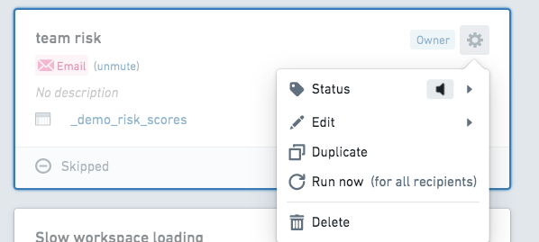
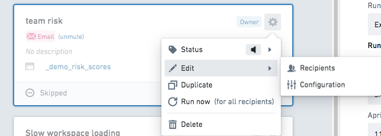
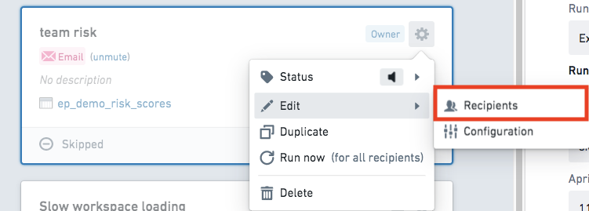
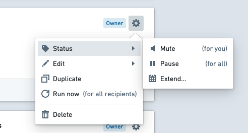
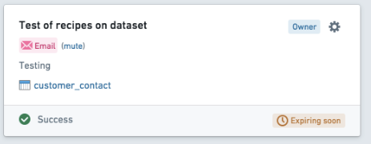
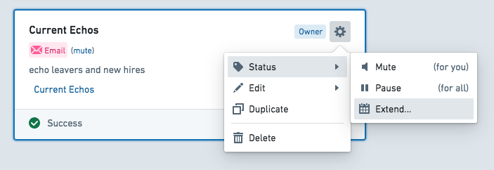
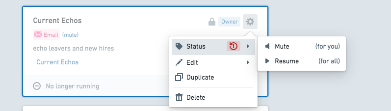
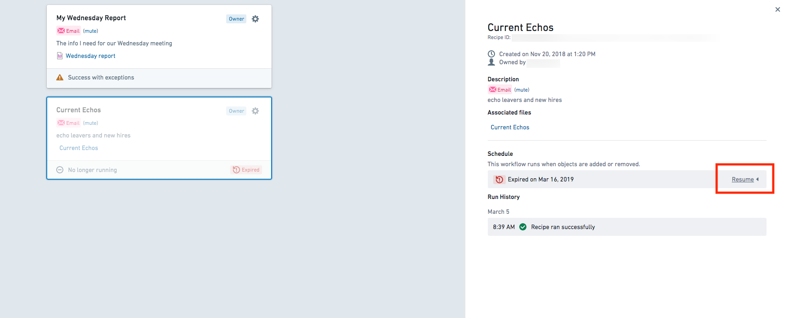
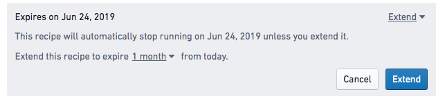
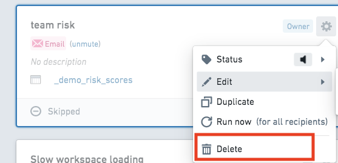

Based on your permission level, you can perform different actions on a recipe. Recipes can be edited via the Recipe Management page. Learn more about the recipe permissions model.
First, click on the recipe you would like to modify, then select the settings cog to open a menu.

Select Edit, then Configuration to modify the recipe.

To add recipients to an existing recipe, select Recipients from the Edit menu.
Note that by default, the maximum number of recipients is set to 25 to preserve overall performance.

If you wish to stop receiving notifications from a particular recipe, you can mute the recipe. A muted recipe is not deleted, but it stops sending notifications. Muting a recipe will silence your notifications, but other recipients of the recipe will still receive them.
Owners of recipes can Pause for all which will stop notifications to all recipients. This may be useful if, for example, recipients are away from their computers for an extended period of time and may not wish to receive notifications, or if there is a planned maintenance event on a monitored sensor.
To mute or pause a recipe, select the setting cog on the recipe panel to open a menu. Select Status, then choose Mute or Pause based on your preference.

Recipe expiration dates can be extended at any time from the Recipe Management page.

Click on the recipe you wish to modify, then click the settings cog. Select Status from the menu.
To extend an active recipe, click Extend.

To resume an expired recipe, click Resume.

Additionally, recipes can be extended by first selecting the recipe card on the Recipe Management page, then selecting Resume from the information panel on the right side of the screen. Authors should receive an email reminding them to extend their recipe that includes a link to this view.


Learn more about recipe expiration.
From the Recipes Management page, first click on the recipe you would like to modify. Then, select the settings cog to open a menu. Select Delete.
:::callout{theme="warning"} You can only delete recipes you own. A deleted recipe will no longer operate for other recipients of that recipe. To stop a recipe from notifying you without deleting it, mute the recipe. :::
